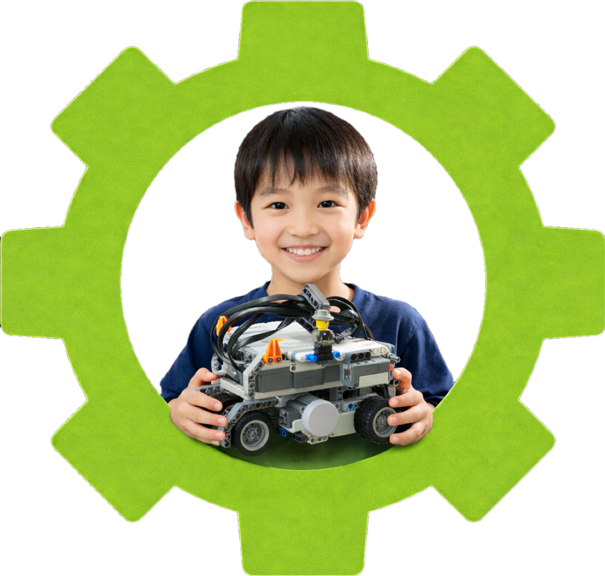
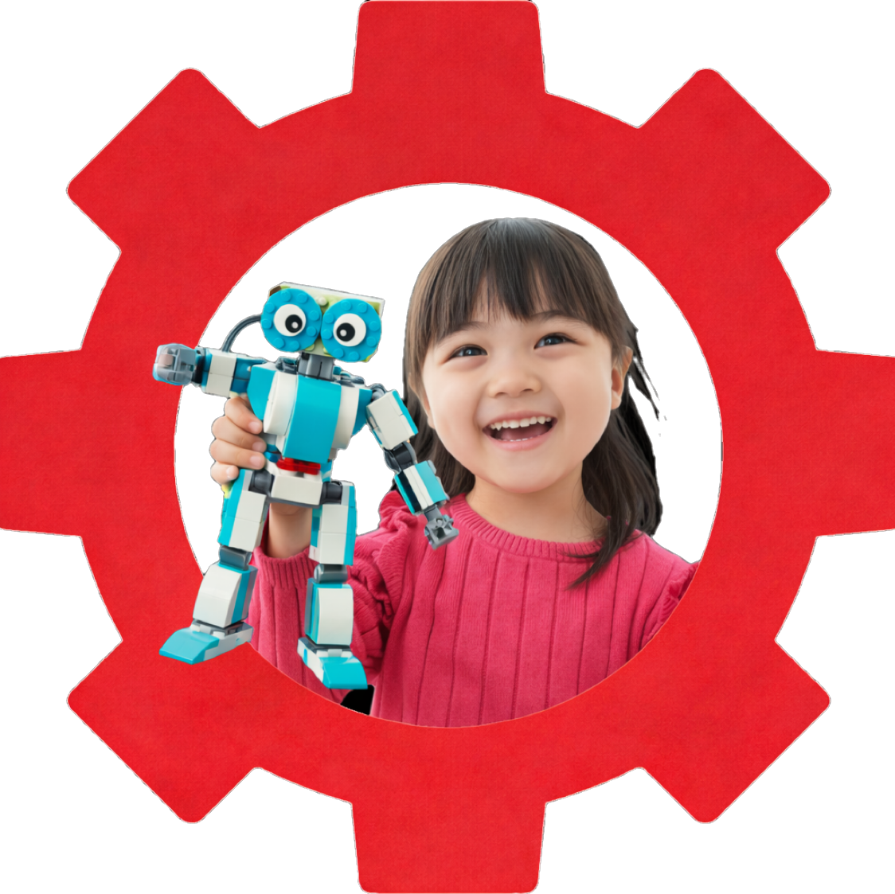

レッスンの様子
今日ははじめてコースのレッスン日。 子ど…
2026.03.16


Think Kids Lab とは？
Think Kids
Labは、年長〜小学生を対象としたプログラミング教室です。
「考える力」を育てることを大切にし、
一人ひとりのペースに合わせた学びを提供しています。
これからの時代に必要なのは、答えを覚える力ではなく、
考え抜く力だと私たちは考えています。
プログラミングを通して、試行錯誤しながら学ぶ経験を大切にしています。
curriculum
「できた！」を積み重ねながら、自分で考え、創る力を育てる教室です。
順序立てて考える力を身につけます。
「どうすれば動くか」「なぜうまくいかないのか」を考え、
試行錯誤する力を育てます。
自分で考え、工夫する力を育てます。
正解をすぐに教えるのではなく、
ヒントをもとに考える時間を大切にします。
アイデアを形にする楽しさを知ります。
ゲームや作品づくりを通して、
自分の考えを表現する経験を積みます。
search
お住まいの地域から、通いやすいThink Kids Labの教室を探せます。
都道府県を選択してください
voice
保護者様の声を集めました。
教室の雰囲気、授業の流れなど、気になる入塾後の様子がうかがえます。
「人前に出るのが苦手でしたが、自作ゲームを褒められたことが自信に繋がったようです。今では『次はこんな機能を作りたい！』と、自分から進んで話してくれるようになりました。」
 " alt="田中恵美子" />
" alt="田中恵美子" />
「プログラミング授業に備えて入会。遊び感覚で学べるので、今では親よりパソコンに詳しくなりました。毎週のレッスンをカレンダーを見て心待ちにしています。」
 " alt="田中恵美子" />
" alt="田中恵美子" />
「算数の文章題が苦手でしたが、今では一歩止まって考える癖がつきました。エラーにも投げ出さず、試行錯誤する粘り強さが身についたのは驚きです。」
 " alt="田中恵美子" />
" alt="田中恵美子" />
「先生たちが子どもの個性を大事にしてくれるので、うちの子も自信を持つようになりました。プログラミングだけでなく、考える力が育っているのを感じます。」
 " alt="田中恵美子" />
" alt="田中恵美子" />
「毎週の授業が楽しみで、家でも自分で新しいことに挑戦しようとする姿勢が生まれました。Think Kids Labに通わせて本当に良かったです。」
 " alt="田中恵美子" />
" alt="田中恵美子" />
「最初は難しいと思っていたのに、今では自分でプログラムを作ることが楽しいと言っています。親として、こんなに夢中になる姿を見たのは初めてです。」
 " alt="田中恵美子" />
" alt="田中恵美子" />
event & lesson
教室でのレッスンの様子やイベントの様子をお届けしています。
子どもたちの「できた！」の瞬間を、ぜひご覧ください。
FAQ
保護者様からいただくご質問にお答えしています。
ご不明な点はお気軽にお問い合わせください。